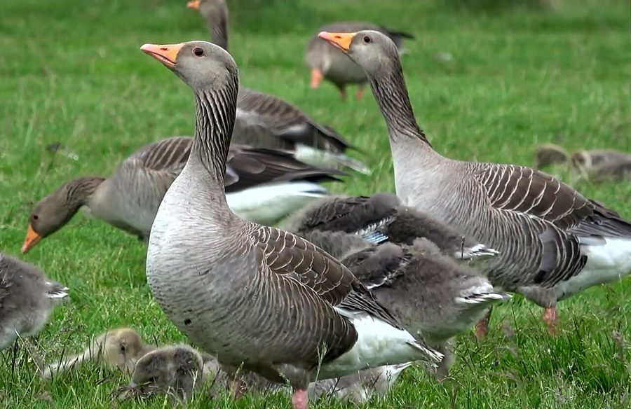

कलहंसGreylag Goose
Anser anser · Anatidae · BRD-0112

- Scientific nameवैज्ञानिक नाम
- Anser anser (Linnaeus, 1758)
- Familyकुल
- Anatidae
- Hindiहिंदी
- कलहंस
- Local namesस्थानीय नाम
- kalhans, kal hans, greylag, greylag goose, grey goose
- Status hereयहाँ की स्थिति
- native
- Movementआवागमन
- Winter visitor
- IUCNIUCN
- LC
- Reviewसमीक्षा
- audited and independently read
When to look कब देखें
Winter visitorशीतकालीन प्रवासी. Expected mainly in November, December, January, February, March.मुख्यतः नवंबर, दिसंबर, जनवरी, फ़रवरी, मार्च में अपेक्षित।
Arrives November–December from breeding grounds in Central Asia and the Caspian region; departs by March–April. Expected along the Ghaghra and Rapti river systems and larger water bodies. All migrants and visitors →
Uses and possibilities उपयोग और संभावनाएँ
Guide: Where the winter birds are: Bakhira, Parvati Arga and the Ayodhya jheels
Drawn from the documented uses in the profile below, where each is labelled traditional, current or a research lead. All uses →
Tell it apart from इनसे अलग पहचानें
कलहंस / Greylag Goose
Anser anser (Linnaeus, 1758) — Anatidae
कलहंस — सर्दियों में यूरोप और कैस्पियन क्षेत्र से आने वाली बड़ी, भूरी और पीली हंस, जो पूर्वी उत्तर प्रदेश में नवंबर से मार्च तक नदियों और तालाबों के पास बड़ी संख्या में पाई जाती है। इसकी चोंच और पैर नारंगी होते हैं, पूरा शरीर भूरा-नीला। यह सबसे बड़ी सर्दियों की हंस है। घाघरा और राप्ती नदियों के किनारे झुंड में देखी जा सकती है।
Quick Identification त्वरित पहचान
| Feature | Description |
|---|---|
| Size | Large goose; 76–89 cm long |
| Plumage | Grey-brown body; lighter on head and neck; darker on wings |
| Head and neck | Pale grey-brown; no distinct markings or patterns |
| Bill | Orange-yellow with a white nail; thick and powerful |
| Legs and feet | Orange-yellow; stout and strong |
| Behaviour | Grazes on land and in water; flies with neck extended |
| Seasonality | Winter visitor only (November–March) |
Field tip: A large, overall grey-brown goose with an orange bill and orange legs, on rivers and lakes in winter — is a Greylag Goose. Paler than most other grey geese. Often in large flocks; very vocal with loud honking calls.
हिंदी — कैसे पहचानें:
बड़ी सर्दियों की हंस — नवंबर से मार्च तक।
पूरा शरीर भूरा-नीला, नारंगी चोंच और पैर।
झुंड में तेज़ गाँव-जैसी आवाज़।
नदियों और बड़े तालाबों पर।
Morphology आकारिकी
Biometrics:
| Measurement | Range |
|---|---|
| Total length | 760–890 mm |
| Wing (flattened chord) | 420–500 mm |
| Tail | 140–180 mm |
| Bill | 53–65 mm |
| Tarsus | 70–85 mm |
| Weight | 2000–4000 g |
Size: 76–89 cm long; wingspan 150–180 cm. Weight 2000–4000 g (males heavier than females). One of the largest geese in the region.
Plumage: Overall grey-brown body. Head and upper neck pale ash-brown, lighter than back. Lower back and rump somewhat darker. Wings grey-brown with white upper tail coverts. Underparts pale, with barred flanks. No bold head markings as in Bar-headed Goose.
Bill: Orange-yellow with white tip (nail). Thick, strong, and blunt — adapted for grazing grasses.
Legs and feet: Orange-yellow; long and stout.
Eyes: Dark iris; medium-sized and bright.
Sexes: Females slightly smaller and duller. Juveniles browner and duller overall.
Vocalisations. Highly vocal; loud, resonant calls:
- Flight and gathering call: Loud honking — aang-aang or hong-hong — given frequently in flight and at water.
- Alarm call: Sharp, penetrating honking when disturbed.
हिंदी: गाँव की महिलाओं के चिल्लाने जैसी तेज़, तक़ी आवाज़।
Behaviour & Ecology व्यवहार और पारिस्थितिकी
Grazer and herbivore: Greylag Geese are primarily grazers, feeding on:
- Wetland and aquatic grasses (Phragmites, Typha, Saccharum spp.)
- Agricultural crops (wheat, barley, rice stubble)
- Sedges, rushes, and other wetland vegetation
- Occasionally aquatic invertebrates
Feeding ecology: Diurnal grazers; feed on land and in shallow water. Upend to reach vegetation in deeper water but do not dive.
Social behaviour: Highly gregarious; form large flocks in winter. Flocks remain together throughout the day, maintaining loose group cohesion.
Territory: None during winter; birds are nomadic within their wintering range.
Roosting: Nocturnal roosts on large open water bodies; birds gather at dusk and remain on water overnight, departing to feeding areas at dawn.
Predators: Large eagles, jackals, and hyenas may take adult birds. Eggs and young taken by corvids and mammals in breeding areas.
हिंदी: झुंड में रहने वाली चिड़िया। मुख्यतः घास चरती है। सर्दियों में बहुत सतर्क रहती है।
Life Cycle / Phenology जीवन चक्र
Winter visitor: Arrives November–December from high-altitude breeding grounds; departs by March–April. Does not breed in India.
Breeding range: Central Asia, Caspian region, and southern Russia — from the Caspian Sea eastward to Kazakhstan and Siberia. Breeds March–July at elevation 0–1000 m.
Migration: Flocks depart breeding grounds by August and arrive at wintering grounds (India) by November. Northward movement begins in February–March. Winter stay: November–March; departure peaks March–April.
Wintering: Concentrates at large lakes, rivers, and wetland systems. Established roost sites used repeatedly.
Moult: Complete moult occurs before arrival; acquire fresh plumage before the journey southward.
हिंदी: नवंबर में कैस्पियन क्षेत्र से आता है। मार्च-अप्रैल तक लौट जाता है। सर्दियों में झुंड में रहता है।
Host Plants or Prey आहार
| Food Type | Examples | Feeding Behaviour |
|---|---|---|
| Wetland grasses | Reed (Phragmites), cattail (Typha), Saccharum spp. | Grazing at water margins and in shallow water |
| Agricultural crops | Wheat, barley, rice stubble | Gleaning in harvested and newly sown fields |
| Sedges and rushes | Carex, Juncus spp. | Grazing at wetland edges |
| Aquatic plants | Pondweeds, water lily | Upending and pulling submerged vegetation |
हिंदी: मुख्यतः घास और अनाज खाता है। खेतों में चरता है।
Predators / Natural Enemies शत्रु
- Avian predators: Golden Eagle, White-tailed Eagle, Steller's Sea Eagle, Marsh Harrier
- Mammalian predators: Jackal, hyena, wild dog, fox
- At nest (breeding grounds): Corvids, weasels, martens
- Parasites: Waterfowl helminths and protozoa
हिंदी: बड़े शिकारी चिड़ियाँ और जंगली जानवर इसका शिकार करते हैं।
Agricultural / Human Relevance कृषि प्रासंगिकता
Crop damage: Large flocks can cause significant damage to newly sown wheat and barley by grazing. In some areas, farmers report 10–30% crop losses in heavily affected fields (Ali & Ripley 1989).
Hunting history: Historically hunted for food and sport across much of its range; now protected in India under the Wildlife (Protection) Act 1972.
Cultural significance: Featured in literature and folklore across Europe and Asia as a symbol of wildness and migration. Classical Sanskrit and Hindi texts mention wild geese (वनहंस) as symbols of freedom and devotion.
हिंदी: कभी-कभी गेहूँ की नई फसल को नुकसान पहुँचाता है। लेकिन अब यह पूरी तरह सुरक्षित है।
Expected Locally स्थानीय रूप से अपेक्षित
Not a field record. Written from published accounts for eastern Uttar Pradesh. No confirmed local sighting yet — if you have seen it, that is what the atlas needs.
अभी तक स्थानीय पुष्टि नहीं। यह विवरण प्रकाशित स्रोतों से है, किसी अवलोकन से नहीं।
The Greylag Goose is expected as a winter visitor to the Ghaghra and Rapti river systems in eastern UP from November through March. Mishra et al. (2019) recorded this species at Bakhira Bird Sanctuary in October 2017–March 2018; Yashmita-Ulman & Singh (2025) recorded it at Parwati Arga in March 2024 to February 2025. Published range and habitat information place it in larger water bodies of the region during winter months. Large flocks are expected at key wetlands during peak season (December–February). The species is less common than Bar-headed Goose but occurs in similar habitats.
Distribution वितरण
Global range: Breeds in Central Asia (Caspian region, Kazakhstan, southern Russia); winters across the Middle East, South Asia, and East Africa.
In India: Widespread winter visitor across northern and central India, concentrated on major river systems.
In Uttar Pradesh: Regular winter visitor throughout the state, particularly along the Gangetic system, Ghaghra, and Rapti rivers.
In Basti district / eastern UP: Winter visitor to the Ghaghra and Rapti river systems and adjoining wetlands. Less common than Bar-headed Goose; recorded at Bakhira Bird Sanctuary and Parwati Arga. Most frequent November–March, with peak numbers January–February.
Research Questions शोध प्रश्न
- What is the population size and trend of Greylag Geese in the Ghaghra-Rapti system over the last decade?
- Do Greylag Geese show site fidelity — returning to the same wintering sites in successive years?
- How significant is crop damage caused by Greylag Geese in wheat and barley fields of Basti district?
- कौन-से मुख्य तालाब और नदी के हिस्से सर्दियों में कलहंस को सबसे ज़्यादा पसंद हैं?
- Do Greylag Geese compete with other winter-visiting geese (Bar-headed Goose, Northern Pintail) for food and roosting sites? (Equipment-free: observe flocks and document their feeding and roosting behaviour.)
- क्या जलवायु परिवर्तन से कलहंस के आने और जाने का समय बदल रहा है?
Similar Species मिलती-जुलती प्रजातियाँ
| Species | How to tell apart | हिंदी |
|---|---|---|
| Bar-headed Goose (Anser indicus) | Smaller; paler head and neck; two bold black bars on crown and nape | छोटा, सफेद सर, काली पट्टियाँ |
| Greater White-fronted Goose (Anser albifrons) | Smaller; white forehead; dark body with heavy barring; yellow legs | छोटा, सफेद माथा, धारीदार शरीर |
| Spot-billed Duck (Anas poecilorhyncha) | Much smaller; duck not goose; spotted bill; brown plumage | बत्तख, बहुत छोटी, धब्बेदार चोंच |
Field rule: A large, overall grey-brown goose with an orange bill and orange legs, flying with loud honking calls — is a Greylag Goose. Bar-headed Goose is paler with bold black head bars.
Taxonomy & Classification वर्गीकरण
Original description. Anser anser was described by Carl Linnaeus in 1758 in Systema Naturae, 10th Edition, volume 1, page 122, as the "wild goose". Type locality: Europe.
Subspecies. Two subspecies are recognised:
- A. a. anser Linnaeus, 1758 — Western Europe to Siberia; winter to Africa and South Asia (this form in India)
- A. a. rubrirostris Swinhoe, 1878 — Central Asia and Siberia; winter to Middle East and South Asia
The populations wintering in India belong predominantly to A. a. anser.
Family and order placement. Order Anseriformes; family Anatidae (ducks, geese, swans); genus Anser contains the "grey geese" of the Northern Hemisphere.
Phylogenetic notes. Anser anser is the wild ancestor of the domestic goose. It is closely related to other Anser species; molecular studies place it in a clade with Bar-headed Goose and Greater White-fronted Goose.
IUCN status rationale. Assessed as Least Concern (LC). The global population is large (>1 million) and increasing. The species has benefited from protection in many countries and management of key wintering wetlands. Range is expanding northward in response to climate change.
Photo Gallery फोटो गैलरी
No photos yet — add field photos to media/species/greylag_goose/ and run node scripts/sync_photos.js.
Photos needed आवश्यक फोटो
- [ ] Flock on water in winter (झुंड पानी पर)
- [ ] Close-up of head and bill (सिर का नज़दीक़ी फोटो)
- [ ] In flight showing pale body (उड़ान में)
- [ ] Grazing on land near river (नदी के किनारे चरते हुए)
- [ ] Individual showing full profile (पूरा पक्षी)
Atlas Connections संबंधित प्रजातियाँ
- Bar-headed Goose — sympatric winter visitor; different head pattern
- Indian Spot-billed Duck — shares wetland habitats; smaller duck species
- Common Coot — coexists at larger water bodies
References संदर्भ
- Linnaeus, C. (1758). Systema Naturae per Regna Tria Naturae (10th edn). Laurentii Salvii, Holmiae. Vol. 1, p. 122. [original description]
- Ali, S. & Ripley, S.D. (1987). Handbook of the Birds of India and Pakistan. Vol. 1. Oxford University Press, New Delhi.
- Grimmett, R., Inskipp, C. & Inskipp, T. (2011). Birds of the Indian Subcontinent. 2nd ed. Christopher Helm, London.
- Mishra, H., Kumar, V. & Kumar, A. (2019). Population structure and habitat utilization of migratory birds at Bakhira Bird Sanctuary, Uttar Pradesh, India. Pakistan Journal of Zoology, 52(1), 247–254.
- Yashmita-Ulman & Singh, M. (2025). A preliminary assessment of avifaunal diversity in Parwati Arga Bird Sanctuary, Uttar Pradesh, India. Journal of Threatened Taxa, 17(11), 27976–27984.
- BirdLife International (2023). Anser anser. IUCN Red List of Threatened Species.
- GBIF Occurrence Data — Anser anser, Uttar Pradesh (2024).
Source file: species/fauna/birds/greylag_goose.md